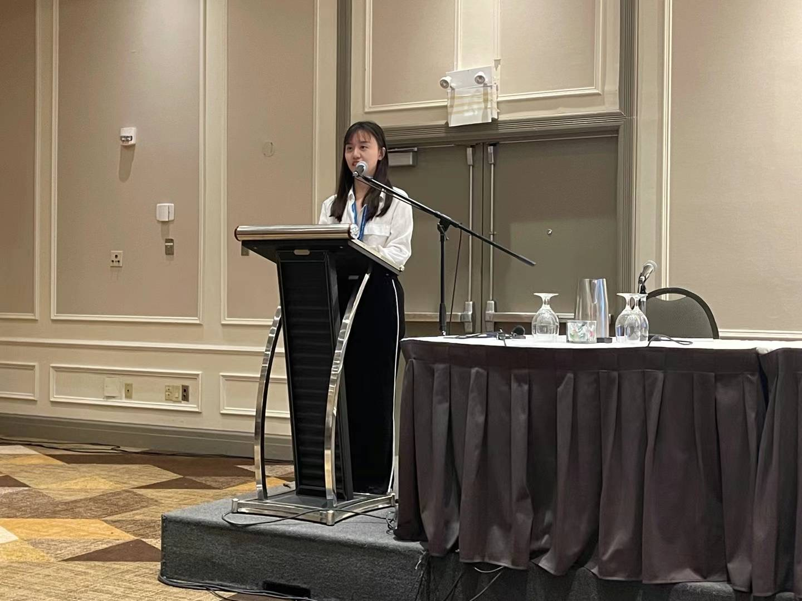
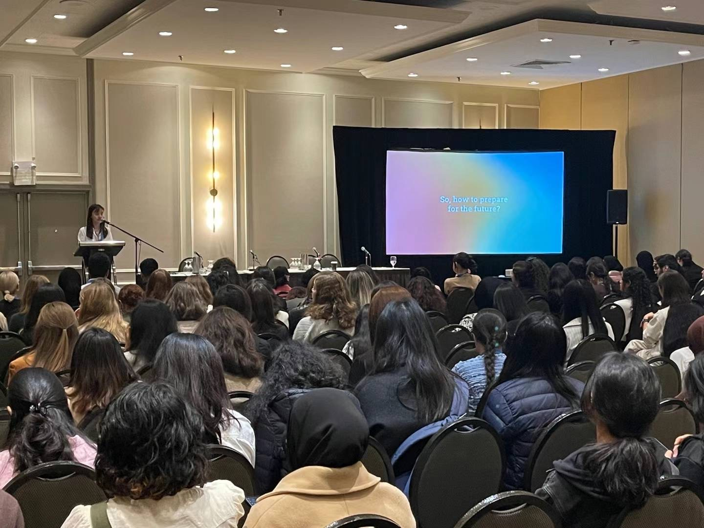

FeiFei (Zifei) Han
“Use Humor, Not Anger.”
🌟 As a "technical girl," coding was my foundation, but my passion passion is to make humans more valuable and safe in the age of AI.
💎 My drive is intrinsic;
Despite not receiving much recognition or encouragement from a young age,
I have persevered every step.
🐳 My ambition extends beyond professional achievements: I seek to meet new friendss and embark on diverse adventures. Embracing the most challenging paths has become my formula for success in life.

Talks and Teaching
I have been actively involved in tutoring and mentoring since 2016, assisting a diverse range of students. Teaching not only allows me to support others but also provides an invaluable opportunity for self-reflection. I've gained significant insights and personal growth from coaching and instructing others..
- Speaker at the Canadian Women in Tech Conferecne (CAN-CWiC)
- AI Era Survival Seminar: I collaborate with the non-profit organization WSSC to organize a series of seminars in various high schools. These seminars aim to equip students with the skills needed to thrive in the AI Era. The content from these seminars will be compiled into a book scheduled for release in March 2024. Stay tuned for updates!
- As an AI Consultanta at the Deloitte Omnia AI Academy team, I have conducted various workshops, technical bootcamps, and employee training programs. One notable example includes leading a Python and PySpark Bootcamp, where I coached 129 participants from one of Canada's largest banks.
- University Teaching Assistant: At University of Toronto Computer Science Department. I served as a TA for first year computer science course for two semesters.
- Future Entrepreneur Course: Together with my partner John, I designed and hosted an intensive week-long course, hosted at Forbes Global Alliance. This course is tailored to high school, university students, and recent graduates, offering guidance on launching their own startups.
- My inaugural independent consulting project in China involved training 70 employees to navigate significant organizational changes and transitions following the COVID-19 pandemic.
- Public High School Tutor: As a volunteer in Toronto High Schools (TDSB), I dedicated two sessions per week, each lasting two hours. Subjects included physics, computer science, and mathematics. Over time, this experience evolved into the foundation of my startup, Uforse.


Technical Aspirations
Coding is a way I heal myself, revover from the busy and demanding life. So I code here and there. Whether is developing webapps, trying out new datasets new AI models, even participate in leetcodes challenges.
Education
Computer Science, University of Toronto
PhD in Computer Science, National University of Singapore
IB Diploma, West Vancouver Secondary
Master of Management Analytics, University of Toronto